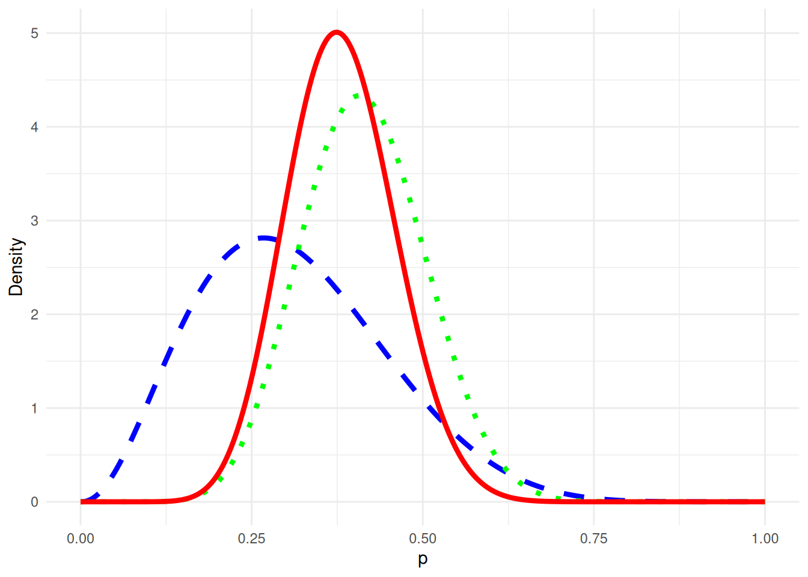

── Attaching core tidyverse packages ──────────────────────── tidyverse 2.0.0 ──
✔ dplyr 1.1.4 ✔ readr 2.1.5
✔ forcats 1.0.0 ✔ stringr 1.5.1
✔ ggplot2 3.5.0 ✔ tibble 3.2.1
✔ lubridate 1.9.3 ✔ tidyr 1.3.1
✔ purrr 1.0.2
── Conflicts ────────────────────────────────────────── tidyverse_conflicts() ──
✖ dplyr::filter() masks stats::filter()
✖ dplyr::lag() masks stats::lag()
ℹ Use the conflicted package (<http://conflicted.r-lib.org/>) to force all conflicts to become errors
library(LearnBayes)
1.1 Ejemplo 1
Pregunta de investigación: ¿Qué proporción de estudiantes universitarios duermen al menos 8 horas diarias?
Notación: \(p\): proporción de estudiantes que duermen al menos 8 horas diarias.
Datos: Muestra de 27 estudiantes donde 11 sí durmieron al menos 8 horas ayer.
Modelo: \[L(p)\propto p^s(1-p)^f\]
Distribución posterior: Si \(g(p)\) es la densidad previa de \(p\), entonces: \[g(p|\text{datos})\propto g(p)L(p)\]Primera escogencia de previa \(g(p)\)
p <-seq(0.05,0.95,by =0.1)previa <-c(1,5.2,8,7.2,4.6,2.1,0.7,0.1,0,0)previa <- previa /sum(previa)plot(p, previa, type ="h", ylab="Probabilidad previa")
a <-3.26b <-7.19s <-11f <-16x_values <-seq(0, 1, length.out =1000)df <-data.frame(x = x_values,Prior =dbeta(x_values, a, b),Likelihood =dbeta(x_values, s +1, f +1),Posterior =dbeta(x_values, a + s, b + f))ggplot(df, aes(x)) +geom_line(aes(y = Prior), linetype ="dashed", size =1.5, color ="blue") +geom_line(aes(y = Likelihood), linetype ="dotted", size =1.5, color ="green") +geom_line(aes(y = Posterior), size =1.5, color ="red") +labs(x ="p", y ="Density") +theme_minimal() +scale_color_manual(values =c("blue", "green", "red")) +theme(legend.position ="top") +guides(color =guide_legend(title ="Density"))
Warning: Using `size` aesthetic for lines was deprecated in ggplot2 3.4.0.
ℹ Please use `linewidth` instead.

Para responder parcialmente la pregunta de investigación:
1-pbeta(0.5, a + s, b + f)
[1] 0.0690226
es decir hay una probabilidad aproximadamente de 7% de que más de la mitad de los estudiantes universitarios duerman más de 8 horas diarias. O bien, si se quiere calcular la probabilidad de que la proporción de estudiantes sea mayor a lo observado:
1-pbeta(11/27, a + s, b + f)
[1] 0.3603559
Intervalo de credibilidad para \(p\):
qbeta(c(0.05, 0.95), a + s, b + f)
[1] 0.2555267 0.5133608
en donde se infiere que \(p\) tiene una probabilidad del 95% de estar ubicado entre esos dos valores. El resultado anterior que es exacto, se puede aproximar usando simulación:
ps <-rbeta(1000, a + s, b + f)hist(ps,xlab="p",main="")
y la probabilidad de que \(p>0.5|\text{datos}\) se puede aproximar empíricamente: